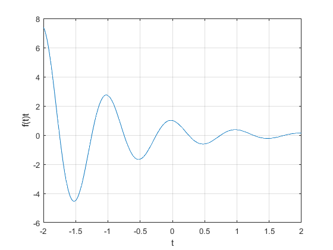

Práctica 1: Señales en tiempo continuo
Contents
Integrantes
- Alejandro Enrique Lopez Ahumada
- Alvaro Catalán Escobar
- Carlos Enrique Mejía López
- Kaleb Villagómez Galván
Objetivos
- Manipulación básica de MATLAB
- Gráficas de señales reales y complejas continuas
- Transformación de señales continuas (escalamientos y traslaciones)
- Calculo de energía y potencia de señales continuas
Introducción
Se investigó sobre Python, especificamente sobre cómo gráficar. Conforme a la investigación se realizó el ejercicio 4.
Ejercicio 4 :
Enlace a codigo de Python: C:/Users/carlos/Documents/Practicas%20MATLAB/html/Problema_4.html
Sección 1
Reproducir la seccion 1.11 del libro de Lathi
f= @(t)exp(-t).*cos(2*pi*t);
Una vez definida, f(t) puede evaluarse pasando los valores de entrada de interés.
t=0; f(t)
ans =
1
Evaluando f(t) en t=0, se obtiene el resultado directamente.
f(0)
ans =
1
Trazamos f(t) sobre el intervalo (-2<t<2) para obtener la evaluación de varios valores simultaneamente.
t=(-2:2); f(t)
ans =
7.3891 2.7183 1.0000 0.3679 0.1353
Para graficar usamos:
plot(t,f(t)); xlabel('t'); ylabel('f(t)t'); grid;

Reajustamos el intervalo para no perder información de la gráfica.
t=(-2:0.01:2); plot(t,f(t)); xlabel('t'); ylabel('f(t)t'); grid;
La función de paso unitario se define fácilmente utilizando el operador relacional >=.
u= @(t)1.0.*(t>=0); t=(-2:2); plot(t,u(t)); xlabel('t'); ylabel('u(t)');
Para solucionar los problemas y apreciar la gráfica de la mejor manera, se tiene que ampliar la caja delimitadora con el comando axis y añadiendo puntos al vector t.
t=(-2:0.01:2); plot(t,u(t)); xlabel('t'); ylabel('u(t)'); axis([-2 2 -0.1 1.1]);
p= @(t) 1.0.*((t>=0)&(t<1)); t=(-2:0.01:2); plot(t,p(t)); xlabel('t'); ylabel('p(t)=u(t)-u(t-1)'); axis([-1 2 -0.1 1.1]);
Ejemplo de una operación combinada de desplazamiento y escalado. Se representa por la forma g(at+b) donde a y b son constantes reales arbitrarias. La función se comprime por un factor de 2 y se desplaza a la izquierda.
g= @(t)f(t).*u(t); t=(-2:0.01:2); plot(t,g(2*t+1)); xlabel('t'); ylabel('g(2t+1)'); grid;
Inversión horizontal con desplazamiento a la derecha.
plot(t,g(-t+1)); xlabel('t'); ylabel('g(-t+1)'); grid;
En una función más complicada, con MATLAB se facilita el trabajo a comparación de hacerlo a mano h(t) = g(2t + 1) + g(-t + 1) sobre (-2 ? t ? 2)
plot(t,g(2*t+1)+g(-t+1)); xlabel('t'); ylabel('h(t)'); grid;
Energía de una señal Aproximación Rectangular. Tiene un error del 1%
x= @(t) exp(-t).*((t>=0)&(t<1)); t=(0:0.01:1); E_x= sum(x(t).*x(t)*0.01)
E_x =
0.4367
%Energía de una señal % Cuadratura Simpson. No es necesario especificar t. % Error relativo de 0.0026%. x_squared= @(t) x(t).*x(t); E_x=quad(x_squared,0,1)
E_x =
0.4323
g_squared= @(t) g(t).*g(t); t=(0:0.001:100); E_g=sum(g_squared(t)*0.001)
E_g =
0.2567
Una aproximación mejor se ontiene con:
E_g=quad(g_squared,0,100)
E_g =
0.2562
Energía de la señal h(t), definida previamente.
h_squared=@(t) (g(2*t+1)+g(-t+1)).*(g(2*t+1)+g(-t+1)); E_h1=quad(h_squared,-2,2)
E_h1 =
0.3761
t=(-2:0.001:2); E_h2=sum(h_squared(t)*0.001)
E_h2 =
0.3769
Sección 2:
Rsuelve el problema 1.2-2. Para la siguiente señal x(t), bosqueja:
- x(t-4)
- x(t/1.5)
- x(-t)
- x(2t-4)
- x(2-t)
a=@(t)((t>=-4)&(t<0)).*(-t); b=@(t)((t>=0)&(t<2)).*(t); t1=-5:0.001:5; figure(1); plot(t1,a(t1)+b(t1)); title('x(t)'); grid on;

figure(2); t2=-8:0.001:8; plot(t2,a(t2-4)+b(t2-4)); grid on; title('Grafica x(t-4)'); xlabel('t'); ylabel('x'); axis([-1 8 -1.5 5]);
figure(3); plot(t2,a(t2/1.5)+b(t2/1.5)); grid on; title('Grafica x(t/1.5)'); axis([-10 6 -1.5 5]);

figure(4); plot(t2,a(-t2)+b(-t2)); grid on; title('Grafica x(-t)'); axis([-4 5 -1.5 5]);
figure(5); plot(t2,a(2*t2-4)+b(2*t2-4)); grid on; title('Grafica x(2t-4)'); axis([-1 4 -1.5 5]);
figure(6); plot(t2,a(2-t2)+b(2-t2)); grid on; title('Grafica x(2-t)'); axis([-1 7 -1.5 5]);
Sección 3
Proporcione el código MATLAB y la salida que traza la parte impar xo (t) de la función
sobre un intervalo de longitud adecuada utilizando un número adecuado de puntos.
clear all u = @(t) 1.0.*(t>=0); d=@(t) 2.^(-t).*cos(2*pi.*t).*u(t-pi); t=(-5:0.001:5); figure plot(t,-d(t),'r','LineWidth', 3); title('Gráfica impar de 2^{-t}cos(2\pit)u(t-\pi)') xlabel('t'); ylabel('x'); axis([-5 5 -1 1]); grid on;
Sección 4
Construye la grafica de
para cuatro rangos (figura 2x2). Los ejes deben mostrarse en el origen además de la edición de su preferencia.
Los cuatro rangos de la funcion x(t) inicial son los siguientes:

Recordar que la construcción de la funcion x(t) se sealizó en la sección de introducción.
Sección 5
1.11-3 Define
(a) Use MATLAB to plot versus for , and and . How important is the scale factor a on the shape of the resulting figure?
Primero definimos las funciones y
x= @(t) exp((1+j*2*pi).*t).*heaviside(-t); Re= @(t) real(2.*x((-5-t)/2)); t= linspace(-10,10,1000);
(a) Graficando las componentes real e imaginaria de para los valores de a establecidos
Im= @(t) imag(x(t)); %Para a= 0.5 subplot(3,1,1) plot(Re(t),Im(0.5.*t),'b') grid on plano = gca; plano.XAxisLocation = "origin"; plano.YAxisLocation = "origin"; axis([-2 2.5 -1 0.75]) xlabel('$Re\{x(t)\}$','interpreter','latex') ylabel('$Im\{x(0.5t)\}$','interpreter','latex') title('Grafica 1') % Para a= 1 subplot(3,1,2) plot(Re(t),Im(t),'r') grid on plano = gca; plano.XAxisLocation = "origin"; plano.YAxisLocation = "origin"; axis([-2 2.5 -1 0.75]) xlabel('$Re\{x(t)\}$','interpreter','latex') ylabel('$Im\{x(t)\}$','interpreter','latex') title('Grafica 2') % Para a= 2 subplot(3,1,3) plot(Re(t),Im(2.*t),'g') grid on plano = gca; plano.XAxisLocation = "origin"; plano.YAxisLocation = "origin"; axis([-2 2.5 -1 0.75]) xlabel('$Re\{x(t)\}$','interpreter','latex') ylabel('$Im\{x(2t)\}$','interpreter','latex') title('Grafica 3')
(b) Graficando en el intervalo
figure plot(t,Re(t),'b') grid on plano = gca; plano.XAxisLocation = "origin"; plano.YAxisLocation = "origin"; axis([-12 12 -1.5 2]) xlabel('${t}$','interpreter','latex') ylabel('$y(t)$','interpreter','latex') title('$y(t)=Re\{2x(\frac{-5-t}{2})\}$','interpreter','latex')
(c) Calculando la energía de la señal
syms t
Ex=int((exp((1+j*2*pi).*t))^2,t,-inf,0)
Ex = -1i/(2*(2*pi - 1i))
(d) Calculando la energía de la señal
syms t
Ey=int((real(2.*x((-5-t)/2))).^2,t,-10,inf)
Ey = 2/(4*pi^2 + 1) + 2
(e) La gráfica de para es
t=linspace(-10,10,1000); plot3(t,real(x(t)),Im(t),'r') grid on plano = gca; plano.XAxisLocation = "origin"; plano.YAxisLocation = "origin"; xlabel('${t}$','interpreter','latex') ylabel('$Re\{x(t)\}$','interpreter','latex') zlabel('$Im\{x(t)\}$','interpreter','latex') title('$x(t)=e^{t(1+2j{\pi})}u(-t)$','interpreter','latex')
Sección 6
Se relizo la siguiente app, en ella se muestra su funcionamiento.